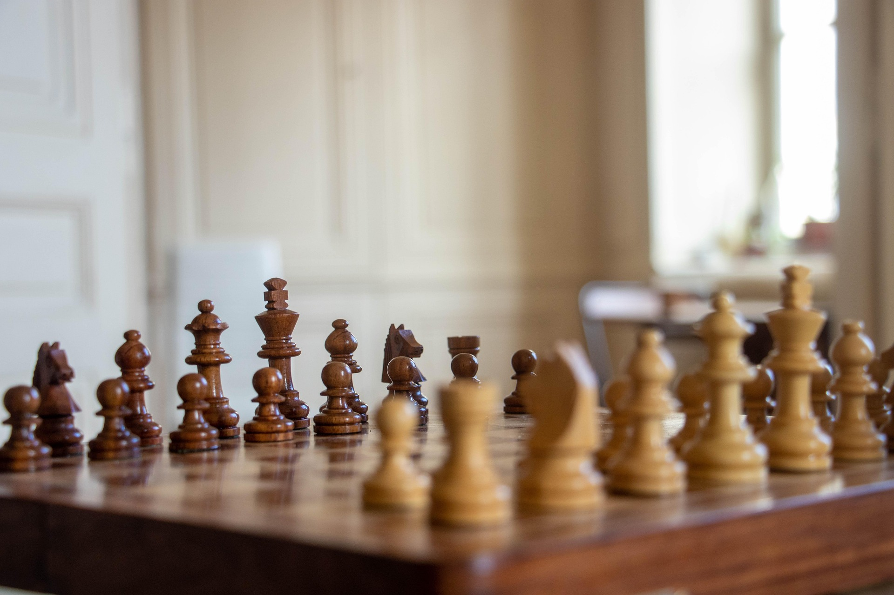
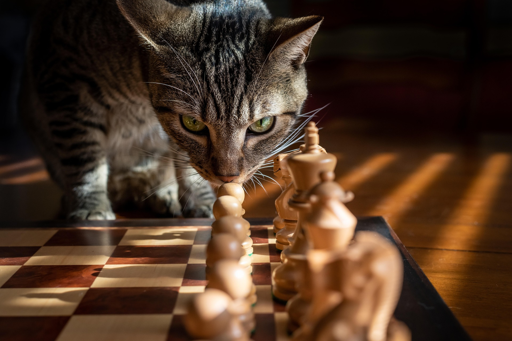
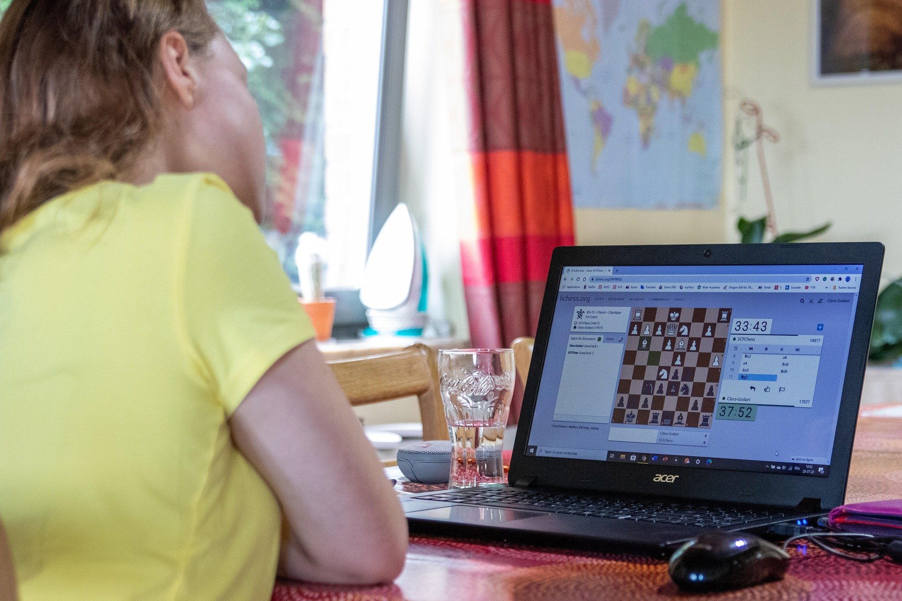
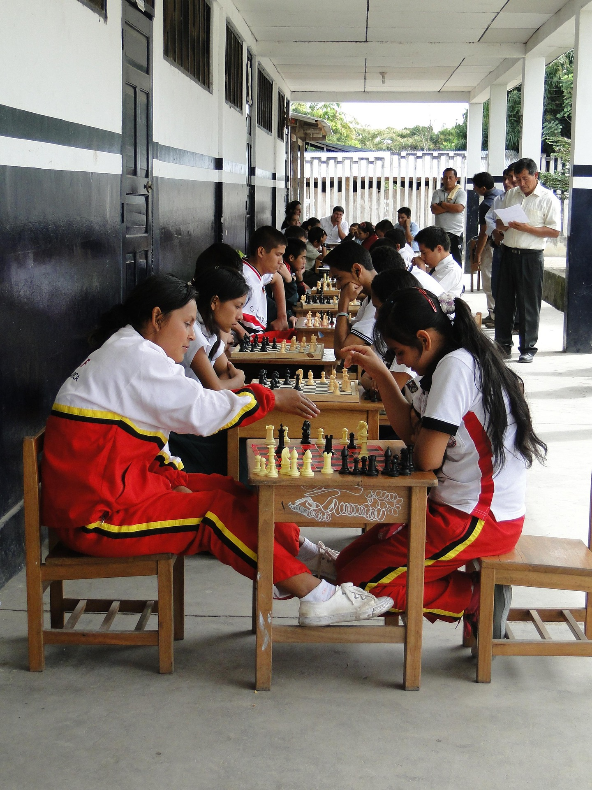
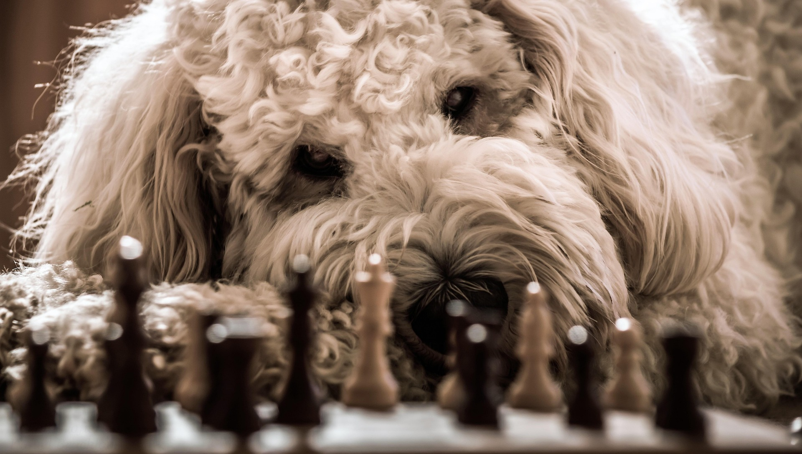

Home
When most people think of chess, they think of a game only for the most intelligent and studious, a game a layman has no chance of understanding. They think of something they could never enjoy.
This isn't the case! Millions of people play chess every day, and most of them aren't very good at it, including myself. That's part of the fun!
Chess has an unfathomable number of strategies; so many that even with rigorous computer assistance, we can't confidently analyze all of them. If you give chess a chance, you're bound to find at least one strategy that suits you.

Sourced from Pixabay
About Me
I'm probably not the biggest chess player you've met. My grandparents had a chessboard that I played with when I visited as a kid, but I only really started looking into it in my late teens. Even then, it's been on and off.
But I still hold chess dear to my heart! I participate in clubs and events when I can, and I've had great times with players of all skill levels, whether way out my league, evenly matched, or still improving.

Sourced from Pixabay
Where to Play
Playing chess online is a great way to start! There are two websites commonly used:
- Chess.com is the largest hub for online chess. Play is unlimited, but some features like puzzles and analysis are limited without a paid account.
- Lichess is a free, open-source alternative. All of its revenue comes from donations. Its features are unlimited, albeit with less flair.
If you want to play in-person, resources will of course vary depending on your region. You're sure to have a chess club somewhere nearby!

Sourced from Pixabay
Events
Both Chess.com and Lichess host very frequent tournaments! On either website, hover over "Play", then click on "Tournaments" to see current and upcoming tournaments.
These events will be split up by their time control; that is, how much time you'll have on your chess clock. The most common time controls are:
- Bullet (1 - 2 minutes)
- Blitz (3 - 5 minutes)
- Rapid (10 - 15 minutes)
- Classical (30+ minutes)
In-person events will again vary depending on your region. If you're in Charlotte, the Charlotte Chess Center has frequent events for both children and adults.

Sourced from Pixabay
Why Chess?
Chess is perhaps the most popular game in the world, and that comes with benefits all on its own. There aren't many games I can play with both my internet friends and my grandparents with no introduction. Regardless of where someone is from or where they are in life, there's a good chance that a game of chess can be your universal language.
It's also just hard not to have a good time! It's such a popular game for a reason; there are so many ways to get an advantage over your opponent, you're bound to find your own unique playstyle. Once you get the hang of the basics, you'll quickly learn how solid, tactical, aggressive, or trappy you want to be to get the most fun out of this beautiful game.
Sourced from Pixabay
Learn
There are countless resources out there for getting the hang of chess. Even if you plan to play in person, I'd recommend at least using Chess.com or Lichess to use the learning resources they provide.
These resources include, but aren't limited to:
- The "Learn" section! Pretty self-explanatory; these will take you from the very basics of how the pieces move to some advanced tactics.
- Puzzles! These will put you into a position where you only have one way to get an advantage. They're a great way to start applying more advanced concepts in a more practical setting.
- Game analysis! Once you finish a game, you can look at computer analysis to see which moves gave you an advantage and what ideas you missed. Chess.com in particular has very in-depth game analysis.

Sourced from Pixabay